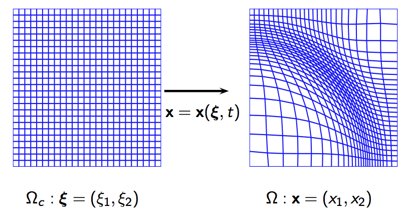
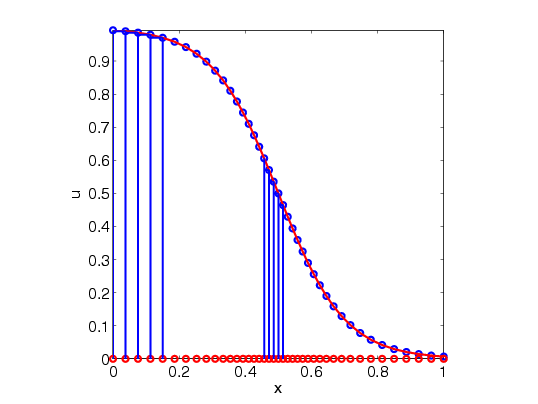

Adaptive Grid Methods
Introduction:
- Adaptive grid methods seek to provide numerical solutions of partial differential equation (PDE) with high accuracy.
The adaptive grid is obtained as an image of a coordinate transformation defined from the computational domain $\Omega_c \subset \mathbb{R}^d$ to the physical domain $\Omega_p \subset \mathbb{R}^d$:
\[ x: \Omega_c \longrightarrow \Omega_p,\quad x = \phi(\xi, t).\]
.

One-dimensional Equidistribution Principle:
- In one spatial dimension, the coordinate transformation for the adaptive grid generation is determined based on the well known equidistribtuion principle, a measure of the error indictor is the same over each subinterval.

-
Higher Dimensional Adaptive Grid Methods (MKP methods):
- In my recent research work (with Russell and Williams), we investigate higher dimensional adaptive grid methods. For these methods the coordinate transformation for the adaptive mesh is obtained as a solution of the L2 Monge - Kantorovich problem.
- Let $\rho(x,t), t > 0$ be a monitor function (used as a measure of error indicator), then set
$\rho_0(\xi) = 1$, and $\rho_1(x) = \rho(x,t)$,
$\xi \in \Omega_c, x \in \Omega.$
- The adaptive grid $x =x(\xi), \xi \in \Omega_c$ is determined as the solution of the $L^2$ MKP:
\[ \inf_{x}\left(\int_{\Omega_c}\left|(x(\xi) -\xi\right|^2\rho_0(\xi)d \xi\right), \quad \textrm{among all}\;\; x(\xi) \;\;\textrm{satisfying}\quad \rho_1(x) \textrm{det}\left(\frac{\partial x}{\partial \xi}\right) = \rho_0(\xi).\]
-
Adaptive meshes for phase field medel:
-
2D Burgers' Equation:
-
3D Adaptive Grid: